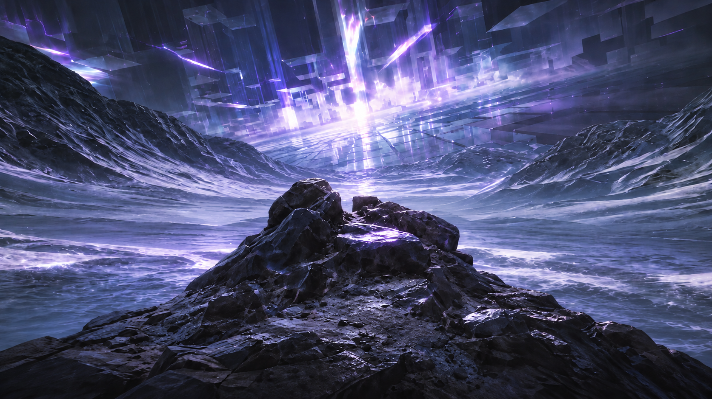
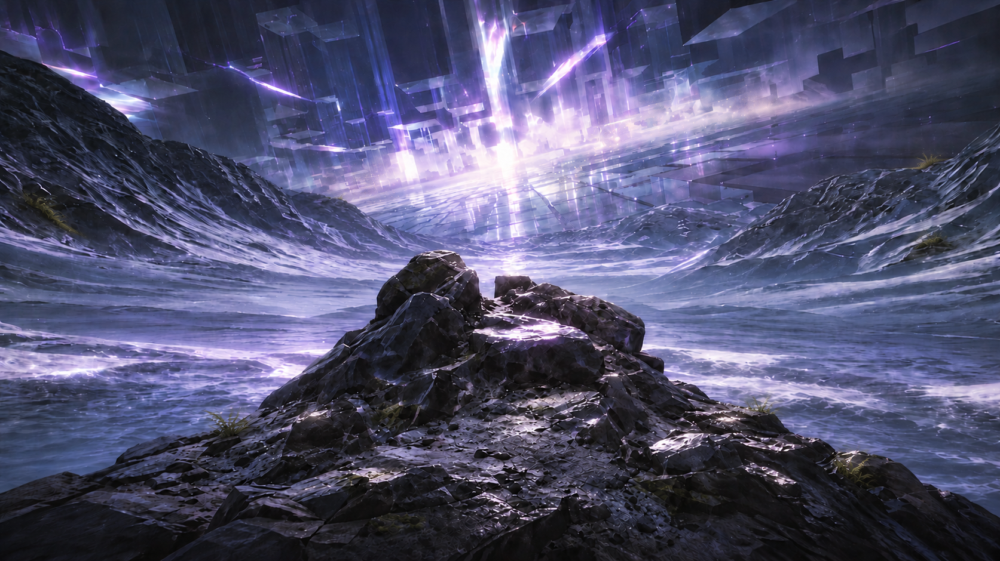
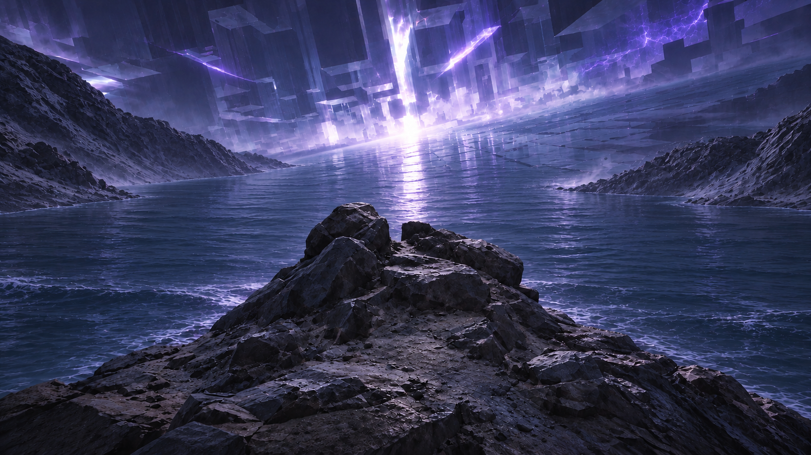
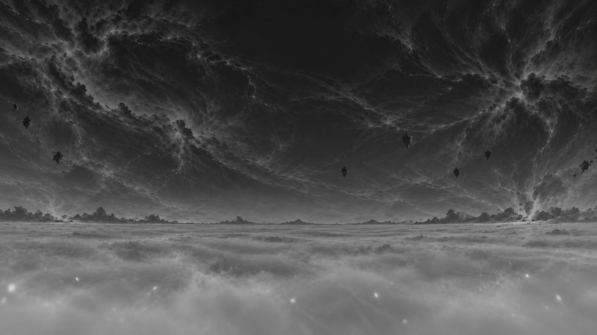
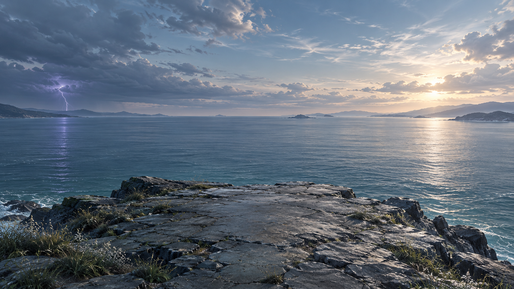
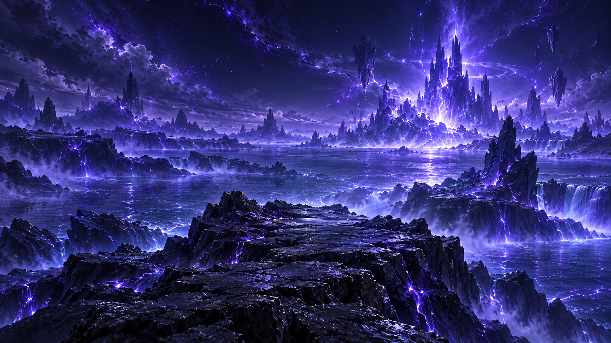
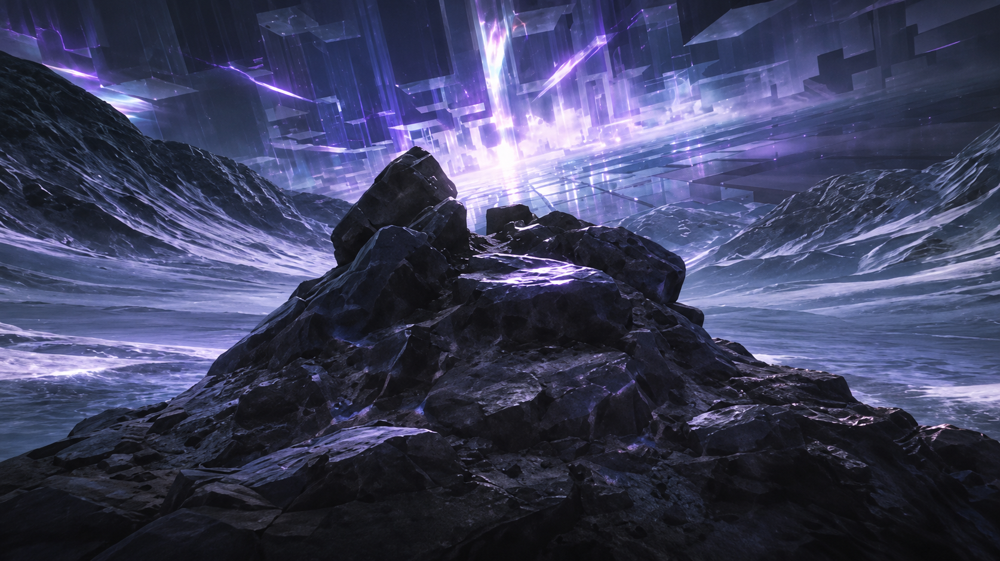
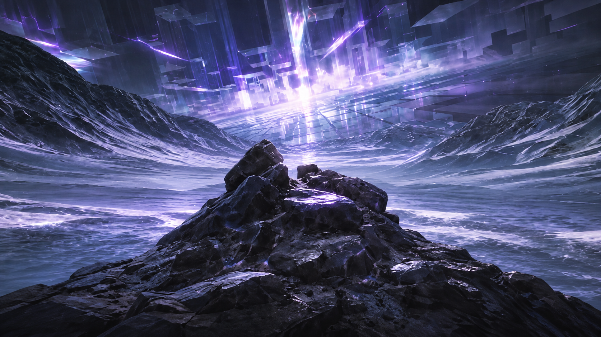
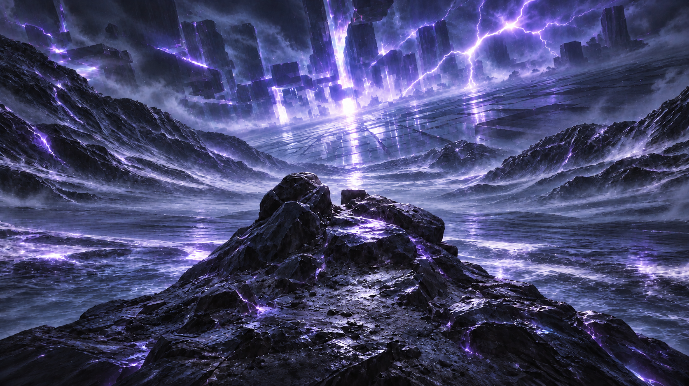
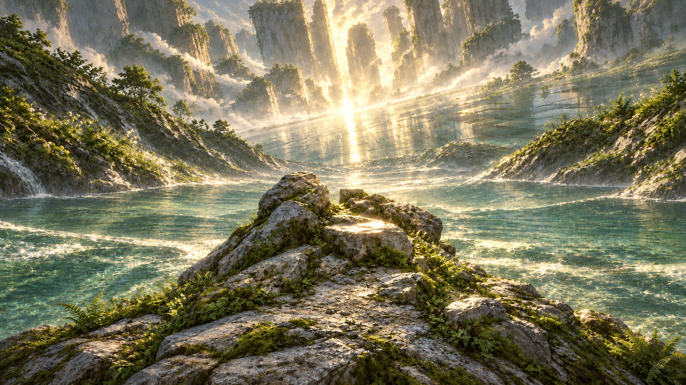

Earlier Electro generation intermediate
Historical intermediate; final earlier Electro art already retained in PR361
Preserved experiments, not a new selected UI direction. Read scope and review decisions. Latest Electro material refinement is pending approval. Raw game references are linked in the notes, not bundled.



Historical intermediate; final earlier Electro art already retained in PR361
Historical grayscale working image, not an approved depth-map replacement

Superseded source of the owner-rejected coastal direction

Superseded source of the owner-rejected meadow direction
Internally discarded; not presented as owner-approved

Owner approved the visual direction, then requested a smaller cliff

Owner preferred this cliff; followed by small silhouette/standing-area edits

Owner selected this composition as the foundation; subsequent material appearance needed refinement
Owner stopped these elemental variations; comparison only

Owner stopped these elemental variations; changed too much of the location

Review experiment; later material critique applies; not a selected final asset
Awaiting explicit visual approval; not integrated into UI